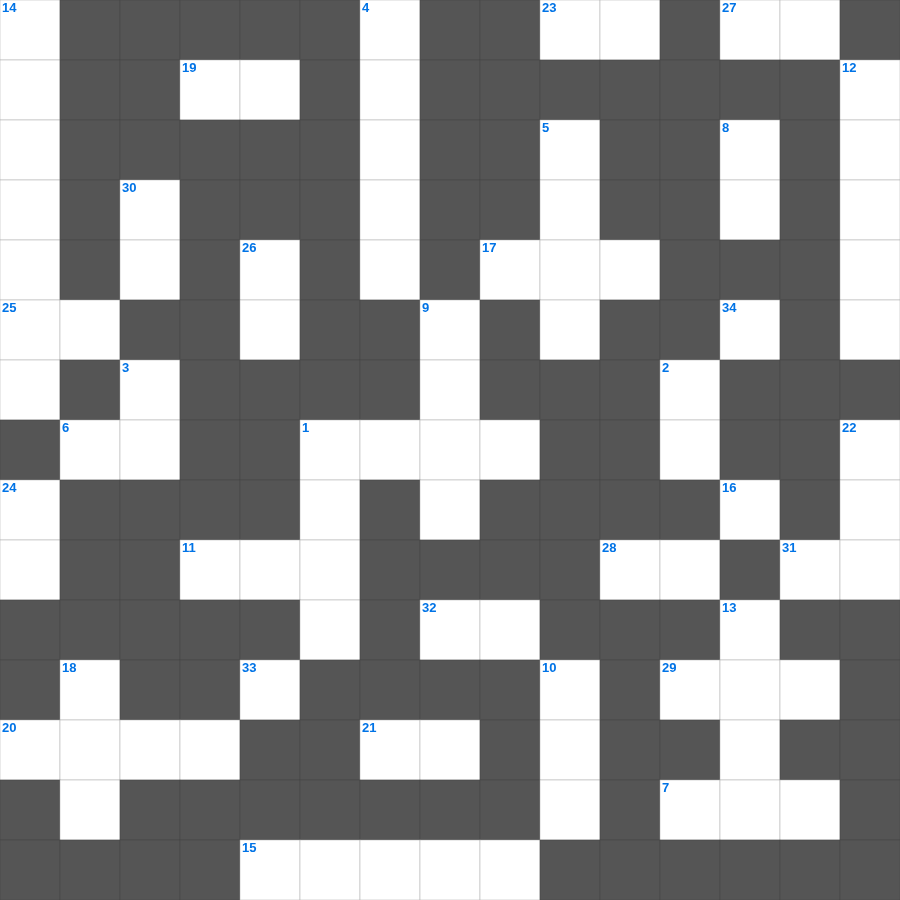

성경 속 특별한 물건
📌 서비스 정의
십자가로세로는 교회 주보와 주일학교에서 사용할 수 있는 성경 기반 가로세로 퍼즐 서비스입니다. 성경 인물, 사건, 핵심 구절을 바탕으로 제작되었습니다. 온라인 풀이 및 인쇄 기능을 제공합니다.
📖 이 글은 어떤 내용인가요?
성경에는 신앙적으로 중요한 의미를 지닌 특별한 물건들이 등장합니다. 언약궤, 만나를 담은 항아리, 놋뱀, 요셉의 채색옷, 다윗의 물맷돌 등은 각 사건의 상징이 되는 물건들입니다. 이 퍼즐은 성경 속 특별한 물건들과 그 의미를 정리합니다.
📚 핵심 포인트
언약궤 · 놋뱀 · 요셉의 채색옷 · 다윗의 물맷돌 · 엘리야의 겉옷
성경의 말씀을 퀴즈로 배우는 성경 성경 퀴즈 문제입니다. 가로 힌트와 세로 힌트를 보고 35개의 단어를 맞춰보세요. 인쇄도 가능하고 정답 확인도 바로 되니 소그룹 모임이나 가정 예배 시간에도 활용하실 수 있습니다.

📝 가로 힌트
1. 다윗이 법궤를 안치하기 전 머물렀던 집
6. 요셉이 형들에 의해 팔려간 나라
7. 에덴 동산에서 아담과 하와가 쫓겨난 일
11. 모세가 물을 낼 때 사용한 도구
15. 엘리가 의자에서 넘어져 목이 부러져 죽은 이유
16. 제사장들이 머리에 쓴 것
17. 최초의 이방인 교회가 세워진 곳
19. 베드로가 감옥에서 천사의 도움으로 나옴
20. 아말렉과의 전쟁에서 모세의 손이 올라가면 이김
21. 하나님의 이름을 이것되이 일컫지 말라
23. 예수님이 부활 후 고기를 구우신 숯불
25. 성경의 맨 마지막 단어
27. 예수님의 지상 직업
28. 일곱 금 이것 사이에 계신 인자 같은 이
29. 성경 인물 중 가장 키가 큰 사람은?
31. 너희는 말씀을 행하는 자가 되고 이것만 하여 자신을 속이는 자가 되지 말라
32. 하나님의 뜻을 전달하는 것
📝 세로 힌트
1. 떡 다섯 개와 물고기 두 마리로 오천 명을 먹이심
2. 안식일에 밀 이삭을 잘라 먹은 제자들
3. 이스라엘이 430년 동안 거주한 나라
4. 엠마오로 가던 두 제자가 예수님을 알아본 시점
5. 다윗이 사울을 죽일 기회에 옷자락만 베었음
8. 예수님이 십자가에서 돌아가신 사건
9. 사무엘이 세운 기념비
10. 야곱이 축복을 받기 위해 팔에 붙인 것
12. 바울과 실라가 감옥에서 한 행동
13. 향유 옥합을 깨뜨려 발을 닦은 것
14. 선한 사람이 강도 만난 자를 도와준 이야기
18. 이스라엘의 유일한 여성 사사
22. 예수님이 세례받으실 때 성령이 이 모양으로 내려옴
24. 다윗이 왕이 되기 전의 직업
26. 네 이웃에 대하여 거짓 이것하지 말라
30. 나 외에는 다른 이것들을 네게 두지 말라
33. 가인이 아벨을 죽인 도구(전통적 해석)
34. 겨자씨 한 알 만한 믿음이 있으면 이 이것을 옮기리라
🧑🏫 교회 교육 자료 활용
이 퍼즐은 주일학교 교재 추천 자료로 활용할 수 있고, 주일학교 주보에 넣기 좋은 분량으로 구성되어 있습니다. 수업용 주일학교 교안에 활동지로 붙이거나, 예배 후 복습용 주일학교 공과교재로 바로 사용할 수 있습니다.
🏷️ 키워드
성경 성경 퀴즈 문제, 성경, 십자가로세로, 성경퀴즈, 말씀퀴즈, 가로세로퍼즐, 주일학교 교재 추천, 주일학교 주보, 주일학교 교안, 주일학교 공과교재